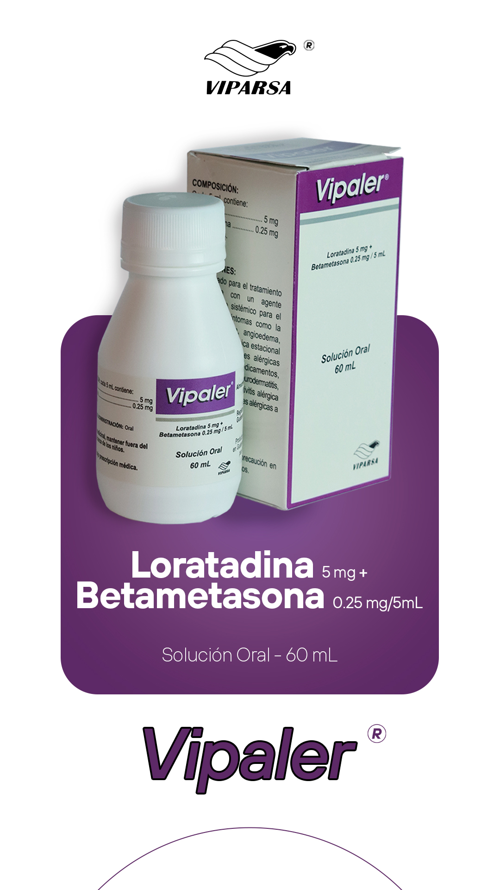

scienceCOMPOSICIÓN
Cada 5 mL contiene:
Loratadina 5 mg
Betametasona 0.25 mg
Vehículo, c.s.
clinical_notesINDICACIONES
Está indicado para el tratamiento coadyuvante con un agente corticosteroide sistémico para el alivio de los síntomas como la dermatitis atópica, angioedema, urticaria, rinitis alérgica estacional y perenne, reacciones alérgicas por alimentos y medicamentos, dermatitis seborreica, neurodermatitis, asma alérgica, conjuntivitis alérgica e indociclitis y reacciones alérgicas a piquetes de insectos.
medicationDOSIS
Niños de 6 a 12 años con peso mayor a 30 Kg
Una cucharadita (5 mL) dos veces al día, cada 12 horas.
Niños de 4 a 8 años con peso de 30 Kg o menos
Media (1/2) cucharadita (2.5 mL) dos veces al día, cada 12 horas.
Adultos y niños mayores de 12 años
Una cucharadita (5 mL) dos veces al día, cada 12 horas, o lo que el médico indique.
blockCONTRAINDICACIONES
Hipersensibilidad al medicamento. Pacientes con infecciones micóticas sistémicas. Durante el embarazo y lactancia, el medicamento debe utilizarse solamente si el beneficio potencial para la madre justifica el riesgo potencial para el feto y bajo estricta prescripción médica.
priority_highEFECTOS ADVERSOS
No tiene efectos sedantes clínicamente significativos a la dosis diaria recomendada (10 mg). Los efectos adversos más comunes incluyen fatiga, cefalea, somnolencia, boca seca, síntomas alérgicos tales como erupciones y trastornos gastrointestinales como náuseas y gastritis.
warningADVERTENCIAS Y PRECAUCIONES
Pacientes con insuficiencia cardíaca, infarto del miocardio reciente o hipertensión, en pacientes con diabetes, epilepsia, glaucoma, hipotiroidismo, insuficiencia hepática, disfunción renal, osteoporosis, úlcera gastroduodenal, colitis ulcerativa inespecífica, diverticulitis, miastenia gravis, herpes simple ocular, psicosis o trastornos afectivos graves. Se debe tener cuidado durante el uso de los corticosteroides ya que pueden enmascarar algunos signos de infección. Durante los tratamientos prolongados se debe examinar a los pacientes regularmente, sobre todo a los niños. El uso prolongado de corticosteroides puede producir cataratas posteriores subcapsulares, glaucomas con posibilidad de daño del nervio óptico y fomentar el desarrollo de infecciones oculares secundarias por hongos o virus. Las dosis habituales y elevadas de corticosteroides pueden aumentar la presión arterial, retención de sal y agua y aumentar la excreción de potasio y calcio. Evitar la exposición a la varicela o al sarampión y que, en casos de haber estado expuestos, consultar al médico. Los corticosteroides sistémicos pueden reactivar la tuberculosis y no se deben utilizar en pacientes con historia de esta enfermedad, excepto cuando se instaura al mismo tiempo un tratamiento antituberculoso. Se debe advertir a los pacientes que este medicamento contiene betametasona, que puede producir un resultado positivo en las pruebas de control del dopaje. Después de dosis elevadas o tratamientos prolongados la retirada del fármaco debe ser de forma gradual. Contiene fenilalanina, precaución en pacientes fenilcetonúricos.
"La salud es lo primero"
Esta información es de carácter orientativo. El uso de este medicamento debe ser supervisado por un profesional de la salud colegiado.